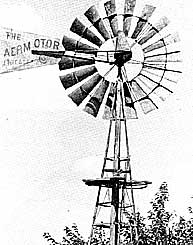
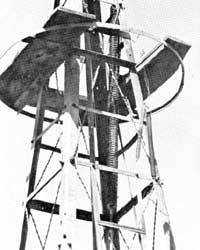
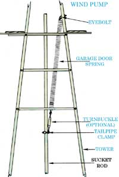

If you use wind power to provide water for your livestock, you may be able to up the system's efficiency.
Folks who attempt to set up a wind pump on a shoestring budget-as I did-may find that, after buying a gearbox, tower, cylinder, and well pipe, there's not much cash left over for a standard "sucker rod". That's what happened to me , anyway, and I had to make do with a substitute. So, after scrounging around, I bought a supply of inexpensive, used one-inch galvanized pipe.
Unfortunately, when I'd completed the system, I found that I wasn't getting anywhere near the rated capacity of the cylinder ... even in very high winds. I started asking around and, sure enough, discovered that using anything but a genuine sucker rod would add excess weight ... overloading the mill and decreasing its output. Simply stated, my galvanized pipe was too heavy.
At first, It seemed there was no choice except to buy the "right" rod. However, used wind pumps are scarce, and new parts are expensive ... so I decided to hold off a bit.
Then, on a trip to Oklahoma, I talked to an old farmer who suggested that I mount a spring to help lift the pumping rod in lighter breezes. He claimed that such a booster can make a real difference in the amount of water a pump supplies ... and I decided that it was worth a try.
To begin, I chose the biggest spring I could find: an old garage door coil. Using an eyebolt, I connected one end of the spring close to the top of the tower, and attached the other end to my sucker rod substitute by means of an old tailpipe clamp and a turnbuckle. The turnbuckle is optional, since the spring tension can easily be adjusted by moving the clamp up or down on the rod (see the accompanying illustration).
The spring should be stretched out far enough to support the weight of the sucker pipe ... thereby allowing the energy your mill captures to lift only water. So, in order to balance the spring's load, I disconnected my makeshift rod from the gearbox by unbolting the jackshaft from the sucker rod. Common sense told me that when the rod dropped down, the spring was too loose ... and when the pipe rose, the tension was too great. Once no motion occurred, I figured I was all set.
Remember that it your pump has the normal eight-inch stroke, you'll want a spring that-at rest-is at least double that length, so it'll exert a more even force through the stroke. (Garage door springs are usually ideal.) Folks with exceptionally deep wells might want to use more than one spring ... spacing them equally around the tower to keep the rod centered.
Before I Installed a booster, my pump was producing approximately three gallons per minute in a stiff breeze ... but with the added spring attachment, my system's per-minute flow has increased to four gallons!
It was an easy modification that certainly paid off for me, and I'm sure other people with "make do" sucker rods on their windpowered water pumpers will find this project to be well worth the effort, too.
|
 The spring is stretched out far enough to support the weight of the sucker pipe. |
 |
 |